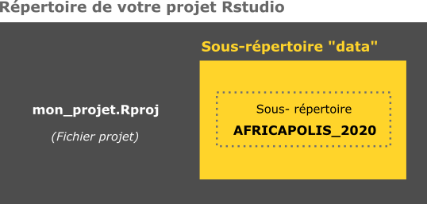

Un peu d’aide ?
# Construction d'un data.frame avec nom et adresse
... <- data.frame(name = "IRSP",
addresse = ".........")
# Géocodage
library(tidygeocoder)
... <- geocode(.tbl = ..., address = ...)Utilisation du fond de carte, Géocodage, extraction de données et calcul d’itinéraire
Timothée Giraud
Hugues pecout
10 juillet 2023
Cette leçon vise à introduire différents types d’exploitation de la base de données géographique libre OpenStreetMap avec R. Les traitements et analyses présentés sont :
tidygeocoderleaflet et mapviewmaptiles, osmdata et osmextractsf, puis par la route avec osrmosrm
1. Créez un projet Rstudio puis un script R à la racine du projet.
File/New Project/New Directory…
2. Géocodez une de ces deux adresses :
A. IRSP : “Institut Régional de Santé Publique de Ouidah, Bénin”
B. LaReSPD : “Université de Parakou, Bénin”
3. Créez un point (objet sf) à partir de la latitude et de la longitude récupérées.
4. Transformez la projection de ce point en WGS84 / Pseudo-Mercator (EPSG 3857), puis visualisez-le avec mapview.
5. Téléchargez les données suivantes :
| Intitulé | Téléchargement |
|---|---|
| Emprise des agglomérations urbaines (AFRICAPOLIS 2020) | Download |
6. Placez les données décompressées dans le répertoire de votre projet, de la façon suivante :

7. Importez la couche géographique africapolis_extract.shp et transformez sa projection en en WGS84 / Pseudo-Mercator (EPSG 3857).
8. Sélectionnez uniquement les agglomérations béninoises.
9. Extrayez les centroïdes des polygones d’agglomération du Bénin.
10. Extrayez la tuile (fond de carte) OSM située au niveau des centroïdes extraits.
Vous pouvez utiliser la fonction st_buffer() pour extraire une zone légèrement plus étendue que l’emprise des centroïdes.
11. Affichez la tuile OSM, les centroïdes d’agglomérations et l’IRSP (ou LaReSPD) sur une carte.
12. Calculez trois matrices de distance différentes entre l’IRSP (ou LaReSPD) et les centroïdes des agglomérations béninoises.
A. Une matrice de distance euclidienne
B. Une matrice de distance par la route
C. Un matrice de distance temps par la route
13. Créez de nouveaux attributs (nouvelles colonnes) dans la couche géographique des centroïdes d’agglomérations, pour y stocker les distances euclidiennes à l’IRSP (ou LaReSPD), et les distances (km et temps) par la route.
Convertissez les distances calculées (mètres) en kilomètres et les temps (minutes) en heures.
14. Calculez les indices moyens d’accessibilité à l’IRSP (ou LaReSPD).
15. Calculez les indices de performances suivants à partir des distances récupérées.
Enregistrez ces indices dans de nouvelles colonnes. Vous pouvez arrondir leurs valeurs à l’aide de la fonction round().
16. Cartographiez l’indice global de performance sur les centroïdes (points) des agglomérations. Utilisez la tuile OSM téléchargée comme fond de carte.
library(mapsf)
library(maptiles)
# Affichage de la tuile
plot_tiles(...)
# Cartographie de l'indice global de performance
mf_map(x = ...,
var = "...",
type = "...",
pal = "...",
leg_pos = "...",
leg_title = "...",
breaks = "...s",
nbreaks = ...,
leg_val_rnd = ...,
border= ...,
cex = ...,
add = TRUE)
# Affichage de l'IRSP (ou LaReSPD)
plot(st_geometry(...), border = NA, col="red", pch = 20, cex = 2, add = TRUE)17. Quelle agglomération présente la plus forte valeur de l’indice global de performance d’accessibilité pour l’IRSP (ou LaReSPD).
18. Calculez l’itinéraire (plus court chemin) entre l’IRSP (ou LaReSPD) et cette agglomération. Cartographiez cet intinéraire sur la tuile OSM téléchargée.
library(osrm)
route <- osrmRoute(src = ..., dst = ...)
# Cartographie
plot_tiles(...)
plot(st_geometry(route), col = "grey10", lwd = 6, add = TRUE)
plot(st_geometry(route), col = "grey90", lwd = 1, add = TRUE)
# Affichage du point d'origine
plot(st_geometry(...), border = NA, col="red", pch = 20, cex = 3, add = TRUE)
# Affichage du point de destination
plot(st_geometry(...), border = NA, col="red", pch = 20, cex = 3, add = TRUE)
# Crédit pour la tuile OSM
mtext(side = 1, line = -1, text = get_credit("OpenStreetMap"), col="tomato")
---
title: "OpenStreetMap & R"
subtitle: "Utilisation du fond de carte, Géocodage, extraction de données et calcul d'itinéraire"
author:
- Timothée Giraud
- Hugues pecout
date: last-modified
ordre: 03
code-fold: true
code-tools: true
format:
html:
theme: cosmo
code-copy: true
---
## Introduction
Cette leçon vise à introduire différents types d'exploitation de la **base de données géographique libre** [**OpenStreetMap**](https://www.openstreetmap.org/#map=5/45.290/-12.085) avec R. Les traitements et analyses présentés sont :
- Géocodage d'adresses avec `tidygeocoder`
- Cartographie interactive avec `leaflet` et `mapview`
- Extraction de données avec `maptiles`, `osmdata` et `osmextract`
- Calcul de matrice de distance euclidienne avec `sf`, puis par la route avec `osrm`
- Calcul itinéraires avec `osrm`
## <i class="bi bi-book"></i> Manuel {.title}
<iframe class="slide" src="https://rcarto.github.io/geomatique_avec_r/osm.html">
</iframe>
\
::: center
<a href="https://rcarto.github.io/geomatique_avec_r/osm.html" class="btn btn-info" role="button" aria-disabled="true"><i class="bi bi-eye"></i> Consulter en plein écran</a>
:::
\
## <i class="bi bi-person-workspace"></i> Exercice {.title .exo-title}
::: {#exo}
[1. Créez un projet Rstudio puis un script R à la racine du projet.]{.question}
*File/New Project/New Directory...*
[2. Géocodez une de ces deux adresses :]{.question}
A. **IRSP** : *"Institut Régional de Santé Publique de Ouidah, Bénin"*\
B. **LaReSPD** : *"Université de Parakou, Bénin"*
```{r warning = FALSE, message = FALSE , eval = FALSE}
#| code-summary: "Un peu d'aide ?"
# Construction d'un data.frame avec nom et adresse
... <- data.frame(name = "IRSP",
addresse = ".........")
# Géocodage
library(tidygeocoder)
... <- geocode(.tbl = ..., address = ...)
```
[3. Créez un point (objet sf) à partir de la latitude et de la longitude récupérées.]{.question}
```{r warning = FALSE, message = FALSE , eval = FALSE}
#| code-summary: "Un peu d'aide ?"
library(sf)
# Création objet sf
... <- st_as_sf(..., coords = c("...", "..."), crs = 4326)
```
[4. **Transformez la projection de ce point en WGS84 / Pseudo-Mercator** (EPSG **3857**), puis visualisez-le avec `mapview`.]{.question}
```{r warning = FALSE, message = FALSE , eval = FALSE}
#| code-summary: "Un peu d'aide ?"
... <- st_transform(..., crs = 3857)
library(mapview)
mapview(...)
```
[5. Téléchargez les données suivantes :]{.question}
| Intitulé | Téléchargement |
|:------------------:|:--------------------------------------------------:|
| Emprise des agglomérations urbaines (AFRICAPOLIS 2020) | <a href="https://bit.ly/3wnQKeG" class="btn btn-outline-warning" role="button" aria-disabled="true"><i class="bi bi-cloud-arrow-down"></i> Download</a> |
[6. Placez les données décompressées dans le répertoire de votre projet, de la façon suivante :]{.question}
```{r, echo=FALSE, out.width="70%", fig.align='center'}
knitr::include_graphics("../img/folder5.png")
```
[7. Importez la couche géographique *africapolis_extract.shp* et transformez sa projection en en WGS84 / Pseudo-Mercator (EPSG **3857**).]{.question}
```{r warning = FALSE, message = FALSE , eval = FALSE}
#| code-summary: "Un peu d'aide ?"
... <- st_read("data/.../....shp", quiet = TRUE)
# Transformation de la projection en Pseudo-Mercator (3857)
... <- st_transform(..., crs = 3857)
```
[8. Sélectionnez uniquement les agglomérations béninoises.]{.question}
```{r warning = FALSE, message = FALSE , eval = FALSE}
#| code-summary: "Un peu d'aide ?"
... <- ...[...$... == "BEN", ]
```
[9. Extrayez les centroïdes des polygones d'agglomération du Bénin.]{.question}
```{r warning = FALSE, message = FALSE , eval = FALSE}
#| code-summary: "Un peu d'aide ?"
... <- st_centroid(...)
```
[10. Extrayez la tuile (fond de carte) OSM située au niveau des centroïdes extraits.]{.question}
Vous pouvez utiliser la fonction `st_buffer()` pour extraire une zone légèrement plus étendue que l'emprise des centroïdes.
```{r warning = FALSE, message = FALSE , eval = FALSE}
#| code-summary: "Un peu d'aide ?"
library(maptiles)
... <- get_tiles(x = st_buffer(x = ..., dist = ...), zoom = 8, crop = TRUE)
```
[11. Affichez la tuile OSM, les centroïdes d'agglomérations et l'IRSP (ou LaReSPD) sur une carte.]{.question}
```{r warning = FALSE, message = FALSE , eval = FALSE}
#| code-summary: "Un peu d'aide ?"
plot_tiles(...)
plot(st_geometry(...), col="..." , add = TRUE)
plot(st_geometry(...), col="..." , add = TRUE)
# Source des données ?
mtext(side = 1, line = -1, text = get_credit("OpenStreetMap"), col="tomato")
```
[12. Calculez trois matrices de distance différentes entre l'IRSP (ou LaReSPD) et les centroïdes des agglomérations béninoises.]{.question}
A. Une matrice de distance euclidienne\
B. Une matrice de distance par la route\
C. Un matrice de distance temps par la route
```{r warning = FALSE, message = FALSE , eval = FALSE}
#| code-summary: "Un peu d'aide ?"
# Distance Euclidienne
... <- st_distance(x = ..., y = ...)
# Distance et temps par la route
library(osrm)
... <- osrmTable(src = ...,
dst = ...,
measure = c("...", "..."))
```
[13. Créez de nouveaux attributs (nouvelles colonnes) dans la couche géographique des centroïdes d'agglomérations, pour y stocker les distances euclidiennes à l'IRSP (ou LaReSPD), et les distances (km et temps) par la route.]{.question}
Convertissez les distances calculées (mètres) en kilomètres et les temps (minutes) en heures.
```{r warning = FALSE, message = FALSE , eval = FALSE}
#| code-summary: "Un peu d'aide ?"
# Distances euclidiennes
...$... <- as.numeric(...) / 1000
# Distances km/route
...$... <- as.numeric(...$...) / 1000
# Distances hrs/route
...$... <- as.numeric(...$...) / 60
```
[14. Calculez les indices moyens d'accessibilité à l'IRSP (ou LaReSPD).]{.question}
```{r warning = FALSE, message = FALSE , eval = FALSE}
#| code-summary: "Un peu d'aide ?"
#|
# Moyenne des indices accessibilité
mean(...$...)
mean(...$...)
mean(...$...)
```
[15. Calculez les indices de performances suivants à partir des distances récupérées.]{.question}
A. **Indice de sinuosité** = distance km par la route / distance euclidienne\
B. **Indice de vitesse sur route** = distance km par la route / distance temps par la route\
C. **Indice global de performance** = **Indice de vitesse sur route** / **Indice de sinuosité**.
Enregistrez ces indices dans de nouvelles colonnes. Vous pouvez arrondir leurs valeurs à l'aide de la fonction `round()`.
```{r warning = FALSE, message = FALSE , eval = FALSE}
#| code-summary: "Un peu d'aide ?"
# Indice de sinuosité
...$ind_sin <- round(...$... / ...$..., 2)
# Indice de vitesse sur route
...$ind_vit <- round(...$... / ...$..., 1)
# Indice global de performance
...$... <- round(...$ind_vit / ...$ind_sin, 1)
```
[16. Cartographiez l'indice global de performance sur les centroïdes (points) des agglomérations. Utilisez la tuile OSM téléchargée comme fond de carte.]{.question}
```{r warning = FALSE, message = FALSE , eval = FALSE}
#| code-summary: "Un peu d'aide ?"
library(mapsf)
library(maptiles)
# Affichage de la tuile
plot_tiles(...)
# Cartographie de l'indice global de performance
mf_map(x = ...,
var = "...",
type = "...",
pal = "...",
leg_pos = "...",
leg_title = "...",
breaks = "...s",
nbreaks = ...,
leg_val_rnd = ...,
border= ...,
cex = ...,
add = TRUE)
# Affichage de l'IRSP (ou LaReSPD)
plot(st_geometry(...), border = NA, col="red", pch = 20, cex = 2, add = TRUE)
```
[17. Quelle agglomération présente la plus forte valeur de l'indice global de performance d'accessibilité pour l'IRSP (ou LaReSPD).]{.question}
```{r warning = FALSE, message = FALSE , eval = FALSE}
#| code-summary: "Un peu d'aide ?"
# Sélection
... <- ...[...$... == max(...$...), ]
```
[18. Calculez l'itinéraire (plus court chemin) entre l'IRSP (ou LaReSPD) et cette agglomération. Cartographiez cet intinéraire sur la tuile OSM téléchargée.]{.question}
```{r warning = FALSE, message = FALSE , eval = FALSE}
#| code-summary: "Un peu d'aide ?"
library(osrm)
route <- osrmRoute(src = ..., dst = ...)
# Cartographie
plot_tiles(...)
plot(st_geometry(route), col = "grey10", lwd = 6, add = TRUE)
plot(st_geometry(route), col = "grey90", lwd = 1, add = TRUE)
# Affichage du point d'origine
plot(st_geometry(...), border = NA, col="red", pch = 20, cex = 3, add = TRUE)
# Affichage du point de destination
plot(st_geometry(...), border = NA, col="red", pch = 20, cex = 3, add = TRUE)
# Crédit pour la tuile OSM
mtext(side = 1, line = -1, text = get_credit("OpenStreetMap"), col="tomato")
```
------------------------------------------------------------------------
\
::: center
<a href="/correction/OpenStreetMap.zip" class="btn btn-outline-warning" role="button" aria-disabled="true"><i class="bi bi-cloud-arrow-down"></i> Corrigé</a>
:::
:::
\